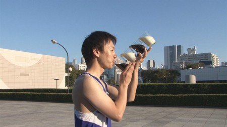

大天才テレビショッピング
2013年12月13日 (金)【2013私の漢字】黒澤美澪奈
★2013私の漢字 ★
私の今年の漢字一文字は、『天』です ！
なぜかと言いますと…
天には、『天空』とか『天体』など
私の好きな宇宙を想像する言葉が、たくさんあるからです！
今年の夏休みに、念願のJAXAの筑波宇宙センターと
相模原宇宙センターに遊びに行ってきました♪
あと今年、家族で温泉に行った時、
星空がとてもきれいだったんです(*''*)
今まで見た中で、一番きれいだったかも知れないです♪
でも、やっぱり『天』と言ったら…
『大！天才てれびくん』でしょ！！
私は、この番組が、大 大 大…だ〜いすきです！！！
今年も、『大！天才てれびくん』に出演できて、
すご〜く嬉しかったので、この漢字にしました(^-^)

★冬を感じるとき ★
冬を感じるときですか〜
それは、
いつも、かぶっている帽子です！
みれなは帽子が好きでよくかぶっています
そして夏と冬で
帽子の素材が違うでしょ？
夏は、ＵＶで涼しげに〜(´∀｀)
冬は、あったかモコモコ帽子！
寒くなってきて、モコモコ帽子をかぶると、
みんな『モコモコだね〜』っていいながら
帽子をさわるついでに、私の頭をなでてくれます！
頭をなでられると、
「あぁ〜、冬だなぁ〜」と思います！
投稿者:黒澤美澪奈 | 投稿時間:18時00分 | 固定リンク


 " title="ソーシャルブックマークについて">
" title="ソーシャルブックマークについて">
※NHKサイトを離れます。
2013年01月22日 (火)「大天才テレビショッピング」〜ちょいつけ〜
「大天才テレビショッピング」１６回目の放送はご覧いただけたでしょうか。
今回ご紹介したのは、大天才テレビジョン商品開発部が総力を挙げて開発した「ちょいつけ」です。
顔の先端から体を温める便利グッズ！これからの季節にぜひ！
※モデル：鎮西寿々歌さん
詳細については、 「大天才テレビショッピング」のページ をご覧ください。
どうぞよろしくお願いいたします。
投稿者:大天才テレビジョン社員３号 | 投稿時間:18時45分 | 固定リンク
" title="ソーシャルブックマークについて">
※NHKサイトを離れます。
2013年01月08日 (火)「大天才テレビショッピング」〜いっしょックス〜
「大天才テレビショッピング」１４回目の放送はご覧いただけたでしょうか。
今回ご紹介したのは、大天才テレビジョン商品開発部が総力を挙げて開発した「いっしょックス」です。

洗濯の後や、タンスから取り出す時に片方を探す心配のない画期的な靴下です。
※モデル：竹原司さん
詳細については、 「大天才テレビショッピング」のページ をご覧ください。
どうぞよろしくお願いいたします。
投稿者:大天才テレビジョン社員３号 | 投稿時間:18時46分 | 固定リンク
" title="ソーシャルブックマークについて">
※NHKサイトを離れます。
2012年11月27日 (火)【大天才テレビショッピング】〜よくばりコップ〜
「大天才テレビショッピング」１３回目の放送はご覧いただけたでしょうか。
今回ご紹介したのは、大天才テレビジョン商品開発部が総力を挙げて開発した「よくばりコップ」です。

コップ５杯分の飲み物が滝のように流れる画期的なデザイン。

コップごとに違う飲み物を入れると、味の変化も楽しめます！

※モデル：山田陶子さん
詳細については、 「大天才テレビショッピング」のページ をご覧ください。
どうぞよろしくお願いいたします。
投稿者:大天才テレビジョン社員１号 | 投稿時間:18時45分 | 固定リンク
" title="ソーシャルブックマークについて">
※NHKサイトを離れます。
2012年11月13日 (火)【大天才テレビショッピング】〜ほかほか冷え冷えベストロー〜
「大天才テレビショッピング」１２回目の放送はご覧いただけたでしょうか。
今回ご紹介したのは、大天才テレビジョン商品開発部が総力を挙げて開発した「ほかほか冷え冷えベストロー」です。
ビジネスマン必携！オールシーズン対応アイテム。

飲み物の入ったペットボトルを取り付け、首元のストローから飲むと
暑さ寒さだけではなく、のどの渇きも癒せちゃう！

※モデル：島田太一さん
詳細については、 「大天才テレビショッピング」のページ をご覧ください。
どうぞよろしくお願いいたします。
投稿者:大天才テレビジョン社員３号 | 投稿時間:18時47分 | 固定リンク
" title="ソーシャルブックマークについて">
※NHKサイトを離れます。
2012年10月30日 (火)【大天才テレビショッピング】〜本革製秋刀魚鞄〜
「大天才テレビショッピング」１１回目の放送はご覧いただけたでしょうか。
今回ご紹介したのは、大天才テレビジョン商品開発部が総力を挙げて開発した「本革製秋刀魚鞄」です。

旬をむかえた秋の味覚「秋刀魚」をスタイリッシュに持ちはこべる専用バッグ。

世界で唯一の魚類専用革鞄職人に完全オーダーメイド！
いつでもどこでも食卓をゴージャスに演出。

※モデル：寺田朱里さん
詳細については、 「大天才テレビショッピング」のページ をご覧ください。
どうぞよろしくお願いいたします。
投稿者:大天才テレビジョン社員３号 | 投稿時間:18時46分 | 固定リンク
" title="ソーシャルブックマークについて">
※NHKサイトを離れます。
2012年10月09日 (火)【大天才テレビショッピング】〜ウインぐつ〜
「大天才テレビショッピング」１０回目の放送はご覧いただけたでしょうか。
今回ご紹介したのは、大天才テレビジョン商品開発部が総力を挙げて開発した
「ウインぐつ」です。


※モデル：ソーズビー航洋さん
詳細については、 「大天才テレビショッピング」のページ をご覧ください。
どうぞよろしくお願いいたします。
投稿者:大天才テレビジョン社員１号 | 投稿時間:18時45分 | 固定リンク
" title="ソーシャルブックマークについて">
※NHKサイトを離れます。
2012年09月18日 (火)【大天才テレビショッピング】〜ハンガーＪＫ〜
「大天才テレビショッピング」９回目の放送はご覧いただけたでしょうか。
今回ご紹介したのは、大天才テレビジョン商品開発部が総力を挙げて開発した
「ハンガーＪＫ」です。


※モデル：長江崚行さん
詳細については、 「大天才テレビショッピング」のページ をご覧ください。
どうぞよろしくお願いいたします。
投稿者:大天才テレビジョン社員２号 | 投稿時間:18時46分 | 固定リンク
" title="ソーシャルブックマークについて">
※NHKサイトを離れます。
2012年07月10日 (火)【大天才テレビショッピング】〜腕砂時計〜
「大天才テレビショッピング」８回目の放送はご覧いただけたでしょうか。
今回ご紹介したのは、大天才テレビジョン商品開発部が総力を挙げて開発した「腕砂時計」です。
いつでもどこでも3分キッチリ計れるペアウォッチ。贈り物にも最適。

詳細については、 「大天才テレビショッピング」のページ をご覧ください。
どうぞよろしくお願いいたします。
投稿者:大天才テレビジョン社員２号 | 投稿時間:18時40分 | 固定リンク
" title="ソーシャルブックマークについて">
※NHKサイトを離れます。
2012年07月06日 (金)【最高の食べ物】鎮西寿々歌
今まで食べたものの中で一番美味しかったもの
家のぎょう子！！！
１番最初に食べた時は、びっくりしました！美味しすぎて・・・♪
あれに勝つぎょう子はまだ無いぞ！！！
次に書くのは・・・
結実だよー。
ゆいゆいゆいかわゆーい！！☆
ゆいのこと大大大好き♪(´∀｀)ﾉ
ゆいの裏話！！！
ゆいはね寝る前になると声が・・・。高くなるんでーす！！！笑
めーっちゃ高くなるんですよー！！
みんなに聞いてほしいわぁー。

投稿者:鎮西寿々歌 | 投稿時間:18時00分 | 固定リンク
" title="ソーシャルブックマークについて">
※NHKサイトを離れます。
ページの一番上へ▲